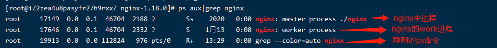
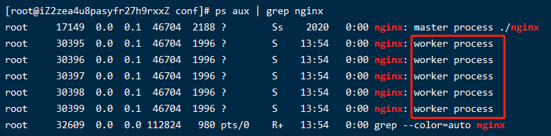
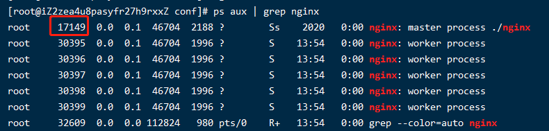
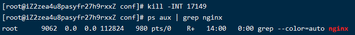
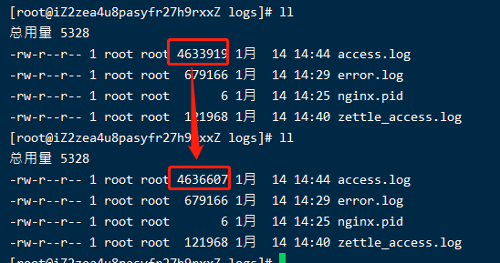
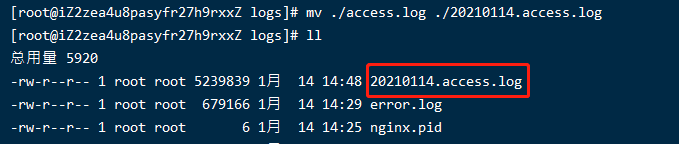
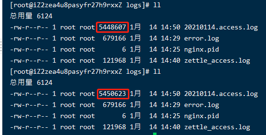
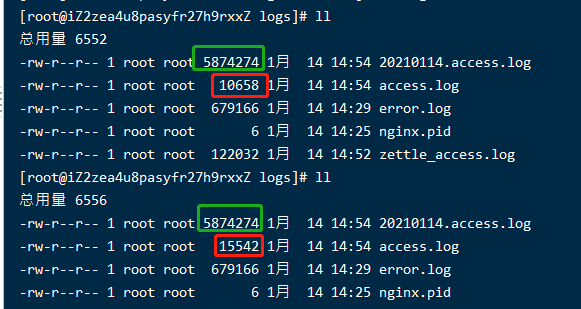

004-nginx的信号量
nginx的信号量，是指和kill搭配的命令，nginx支持下面几种信号量
| 参数 | 含义 |
|---|---|
| term/int | 硬关闭 |
| quit | 软停止，处理完当前没有处理完的请求再关闭 |
| hup | 等到没有请求的时候，再读取nginx配置然后重启 |
| usr1 | 重读日志，在日志切割有用 |
| usr2 | 平滑的升级 |
| winch | 优雅的关闭旧的进程，配合usr2来进行升级 |
1、查看nginx进程
ps aux | grep nginx # 看出nginx的进程
执行完后，可以看到下面的结果：

上面中分别看到3条进程
nginx的这么工作的，master进程负责管理work进程，真正在处理请求的是work进程
我们修改nginx.conf里面的work_process
worker_processes 5;
然后重启nginx，再执行 ps aux | grep nginx 可以看到，这次就有5个work进程了

2、term/int
硬停止即让nginx不管什么情况，立即停止掉
查看nginx的主进程，然后直接通过kill掉进程
ps aux | grep nginx # 查看进程
kill -INT 进程 # 删掉指定进程
执行 ps aux | grep nginx 的到下面结果，看出主进程是17149

接着执行kill -INT 17149，再执行看进程已经不在了

后面为了方面，统一用17149来表示nginx主进程
3、quit
执行 kill -quit 17149
nginx是这么工作的，把当前处理到一半的事情处理完，然后再关闭进程
4、hup
执行 kill -hup 17149
nginx是这么工作的，把当前处理到一半的事情处理完，然后重新读取nginx.conf配置，并重启
5、usr1
执行 kill -usr1 17149
nginx会优雅的读取新的日志节点然后重启，常常用在日志切割
首先我们要知道linux和window对文件名的管理不一样，linux更多的依赖文件的inode来找到文件的
模拟日志切割
- 首先在
http://bbb.com上写个js脚本，让其一直处于刷新状态，这样子就模拟一直有客户端请求nginx，nginx的访问日志一直在累加
<h1>这是bbb页面</h1>
<script>window.location.reload()</script>
- 访问
http://bbb.com一直处于刷新状态，查看nginx的log/access.log日志，可以看到日志一直再增加ll

- 现在模拟到了0点要日志切割了，我们通过命令
mv ./access.log ./20210114.access.log # 把原来的日志重命名
已经把旧的日志归档到了，多次执行 ll 会发现nginx的日志还是继续往20210114.access.log这个上面加，而不是重新生成access.log

这个就是linux上的文件特点，和window不同，linux不依赖文件名去识别文件，而是依赖文件的inode
- 执行
kill -usr1执行下面命令kill -usr1 17149
通过多次ll可以看到，新的访问日志记录是追加到access.log上面了

6、usr2和winch
usr2和winch主要用来优雅的升级nginx版本